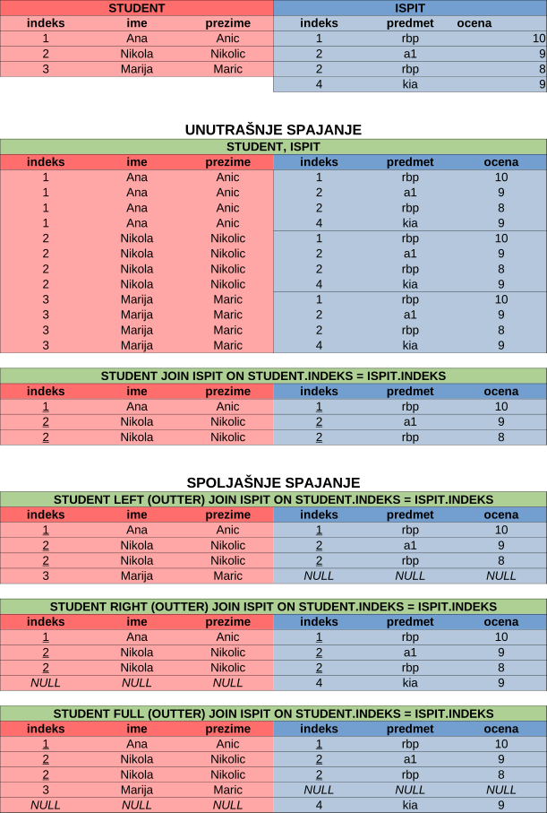
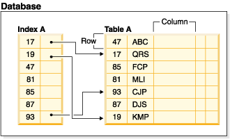
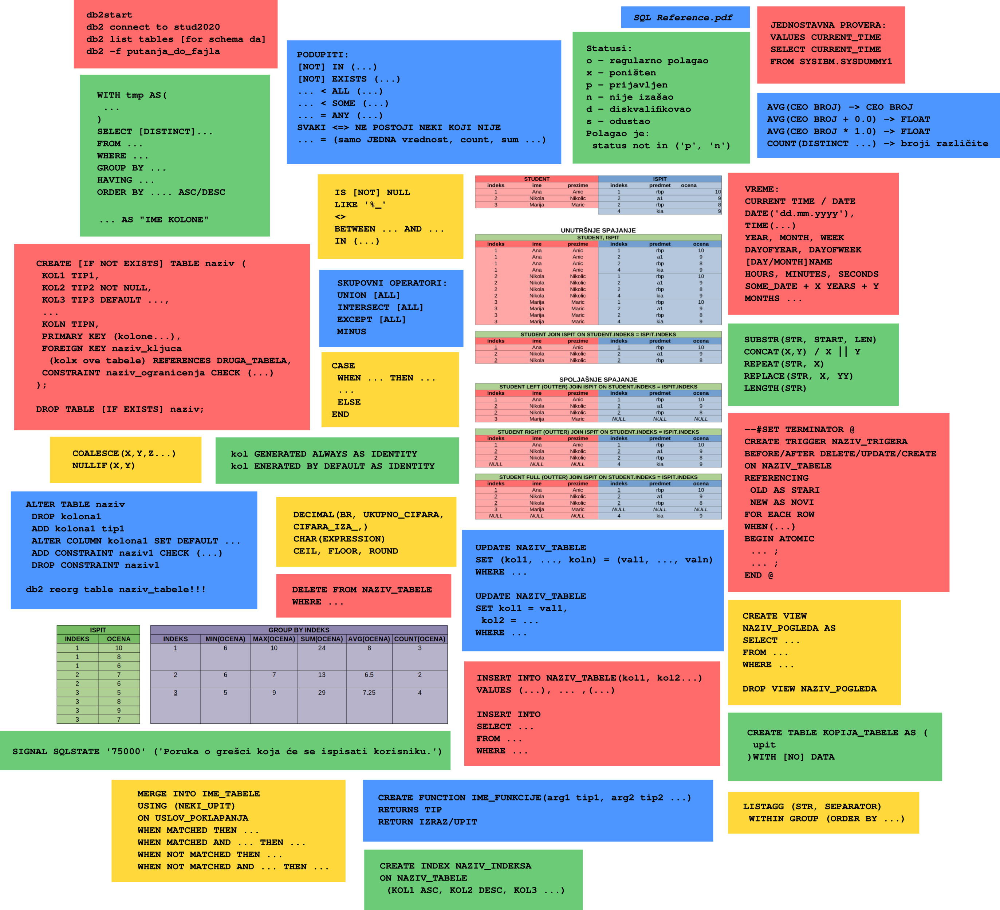

Kontakt: milica.gnjatovic[at]matf.bg.ac.rs
Zvanična stranica predmeta
Srećan početak novog semestra!
Sva važna obaveštenja će biti na zvaničnoj strani predmeta.
Podešavanje sistema
Potrebni programi za vežbe će se ove godine razlikovati u odnosu na prethodnu. Umesto IBM DB2 sistema za upravljanje bazama podataka će se koristiti IBM DB2 docker slika. Ukoliko već imate instaliran DB2 i to može da se koristi.
Umesto IBM Data Studio alat za rad sa bazama podataka će se koristiti alat JetBrains DataGrip. Studentska baza podataka stud2020 ostaje ista kao i prehodnih godina.
Virtuelna mašina se više neće koristiti.
Softver potreban za vežbe:
- Docker
- JetBrains DataGrip
- Studentska baza podataka stud2020
- Pokretanja kontejnera mydb2 nakon što ponovo upalite računar:
- docker start mydb2
- Ulazak u terminal kontejnera:
- docker exec -it mydb2 /bin/bash
Struktura baze podataka
- DA - podaci zapisani ASCII kodnom shemom
- DB - podaci zapisani UTF-8 kodnom shemom
ČAS 1
Komande u db2:
| db2start | pokretanje, nije potrebno u docker kontejneru |
| db2stop | zaustavljanje, nije potrebno u docker kontejneru |
| db2 list db directory | lista svih baza u sistemu |
| db2 | pokretanje interkativnog okruženja |
| db2 connect to IME_BAZE | povezivanje na bazu podataka |
| db2 connect to IME_BAZE user IME_KORISNIKA using SIFRA | povezivanje na bazu podataka kao određeni korisnik |
| db2 connect reset | diskonektovanje |
| db2 list tables | prikaz tabela u bazi za podrazumevanu shemu |
| db2 values current schema | prikaz trenutne sheme |
| db2 list tables for schema IME_SHEME | prikaz tabela u bazi za određenu shemu |
| db2 describe table IME_TABELE/IME_SHEME.IME_TABELE | informacije o tabeli |
| db2 "UPIT" | dohvatanje podataka iz baze |
| db2 -f PUTANJA_DO_FAJLA -v | izvršavanje upita iz fajla, -v naglašava da se svaki upit završava sa ;. Može se dodati -v da se prikaže upit koji je izvršen. U jednom fajlu može biti više upita. |
Baza podataka - kolekcija podataka organizovana na određen način; različiti tipovi, objektne, nerelacione, relacione...
Sistem za upravljanje bazom podataka (SUBP) - program koji omogućava pristup i rad sa podacima iz baze, to je ibm db2.
Relacione baze podataka (RBP) - podaci se predstavljaju u okviru relacija/tabela
Entitet - neki objekat, prikazuje se tabelom; student, predmet, ispit...
Atribut - opisuje objekat, kolone tabele; indeks, ime, prezime...
Student (indeks, ime, prezime, datum_rođenja, mesto_rođenja)
Red/ntorka - podaci o jednom entitetu/studentu/ispitu...
Relaciona baza - skup relacija/tabela
Relaciona shema - opis strukture relacija
SQL - sredstvo za upravljanje relacionom bazom podatka, upitni jezik
Primarni ključ - atribut ili skup atributa koji jedinstveno opisuju entitet
Strani ključ - atribut ili skup atributa kojim se pravi veza ka drugoj relaciji
Shema - grupisane tabele u pogled koji čini celinu, npr. shema za profesore i shema za studente
Redosled izvršavanja:
3 SELECT - kolone koje će se prikazati, * da se prikažu sve kolone1 FROM - odakle izvlačimo podatke, koja tabela
2 WHERE - uslovi koje rezultati treba da ispunjavaju
ČAS 2
Vrste spajanja
Da li staviti uslov u WHERE ili u ON?
Bitno nam je gde ide uslov kada imamo left ili right join. Ako na primer tražimo da se izdvoje studenti i predmeti na kojima imaju desetke, i oni studenti koji nemaju ni jednu desetku.Ako izvršimo:
SELECT D.INDEKS, I.INDEKS, OCENA
FROM DA.DOSIJE D LEFT JOIN DA.ISPIT I
20171010 | NULL | NULL
20171106 | NULL | NULL
20180087 | NULL | NULL
To su studenti koji nemaju ni jedan položen ispit. Dakle, sada imamo studente spojene sa njihovim ispitima, a ako nemaju ispite onda su spojeni sa NULL.
Ovde sada treba dodati uslov za 10ke. Ako dodamo samo
WHERE OCENA=10;
Dobićemo 7401 red, ali među njima će biti sve desetke. Izgubićemo prethodna 3 reda, a to su nam studenti koji nemaju ni jedan položen ispit (samim tim ni jednu 10ku), dakle želimo ih u rezultatu. Da bi ti redovi ostali potrebno je da uslov za 10 ide u ON:
SELECT D.INDEKS, I.INDEKS, OCENA
FROM DA.DOSIJE D LEFT JOIN DA.ISPIT I
Ovo spajanje možemo da tumačimo ovako:
Svakog studenta iz tabele dosije probaj da spojiš sa njegovim ispitom na kom je dobio 10, ako takav ispit ne postoji ostavi studenta u rezultatu i spoji ga sa NULL.Još jedan način da ovo gledate je da pre nego dodamo onaj WHERE razmislimo koje vrednosti će da poredi. U rezultatu pre toga smo videli da imamo redove gde je ocena null, znači da će where koji dodamo imati poređenje null=10. null=10 je false, pa će red time biti izbačen iz rezultata. Ovo razmatranje nam nije tako značajno ako imamo samo join jer će on spojiti samo studente sa njihovim ispitima, nećemo uopšte imati redove sa ocenom NULL na koje potencijalno treba da se pazi da se ne izgube dodavanjem where.
U prethodnim upitima namerno stoje D.INDEKS i I.INDEKS da bi obratili pažnju da su sve I.XXX vrednosti NULL ako ne postoji ispit sa kojim spajamo studenta.
ČAS 3
Podupiti
- X [NOT] IN (SELECT Y FROM ... WHERE ...)
- Gledamo da li je X u nizu Y-ona koji dobijamo iz podupita. Važno je da X i Y imaju isti broj atributa. Na primer možemo imati WHERE (OZNAKAROKA, SKGODINA) IN (SELECT OZNAKA, GODINA FROM ...).
- [NOT] EXISTS (SELECT ... FROM ...)
- Uslov je zadovoljen ako podupit vraća bar jedan red.
- X < ALL (SELECT ... FROM ...)
- Uslov je zadovoljen ako je X manje od svake vrednosti koju vraća podupit. Mogu se koristi i ostali operatori.
- X < SOME (SELECT ... FROM ...)
- Uslov je zadovoljen ako je X manje od neke vrednosti koju vraća podupit. Mogu se koristi i ostali operatori.
- X = ANY (SELECT ... FROM ...)
- Uslov je zadovoljen ako je X jednako nekoj vrednosti koju vraća podupit. Mogu se koristi i ostali operatori.
SVAKI <=> NE POSTOJI NEKI KOJI NIJE
Tražimo studenta koji je položio svaki ispit koji je polagao. <=> Tražimo studenta za kog NE POSTOJI ispit koji NIJE POLOŽIO.
Napomene posle časa:
- Drugom zadatku je dodata napomena uz još jedno rešenje.
-
U narednom primeru ćemo imati grešku jer se u order by ne zna da li želimo da uredimo po indeksu iz tabele dosije ili po indeksu iz tabele ispit. Možemo to rešiti tako što ćemo staviti order by D.INDEKS ili order by I.INDEKS.
SELECT *
FROM DA.ISPIT I JOIN DA.DOSIJE DON I.INDEKS = D.INDEKS
ORDER BY INDEKS;Međutim, u narednom primeru nemamo grešku jer se u select nalazi jedan indeks, pa se po njemu uređuje.
SELECT D.INDEKS, IME
FROM DA.ISPIT I JOIN DA.DOSIJE DON I.INDEKS = D.INDEKS
ORDER BY INDEKS;
ČAS 4
Skupovni operatori
- UNION
- upit1 UNION upit2 nam daje sve redove iz upita1 i upita2 bez duplikata. Važno je da i prvi i drugi upit vraćaju isti broj kolona i da su te kolone istog tipa. Na primer u redu je ako prvi upit vraća ime (string), ocenu (broj), a drugi prezime (string), indkeks (broj). Nije u redu ako prvi vraca ocenu (broj), a drugi ime (string).
- UNION ALL
- Identično kao UNION samo što ovde možemo imati duplikate. Efikasnije je od UNION jer ne proverava duplikate. UNION je kao da smo na UNION ALL primenili DISITNCT.
- INTERSECT
- upit1 INTERSECT upit2 nam daje sve redove iz upita 1 koji postoje i u upitu 2 bez duplikata. Važno je da i prvi i drugi upit vraćaju isti broj kolona i da su te kolone istog tipa.
- INTERSECT ALL
- Identično kao INTERSECT samo što ovde možemo imati duplikate. Efikasnije je od INTERSECT jer ne proverava duplikate. INTERSECT je kao da smo na INTERSECT ALL primenili DISITNCT.
- EXCEPT / MINUS
- upit1 EXCEPT upit2 nam daje sve redove iz upita 1 koji ne postoje u upitu 2 bez duplikata. Važno je da i prvi i drugi upit vraćaju isti broj kolona i da su te kolone istog tipa. EXCEPT i MINUS su sinonimi i potpuno je svejedno da li koristimo jedno ili drugo.
- EXCEPT ALL
- upit1 EXCEPT ALL upit2 nam daje sve redove iz upita 1 koji ne postoje u upitu 2 uzimajući u obzir duplikate. Ako prvi upit vraća X za svaku ocenu 10, a drugi upit vraća X za svaku ocenu 6, i ako student ima 5 desetki i 3 šestice u rezultatu će biti 2 reda sa X. Ako bi u ovom primeru koristili samo EXCEPT dobili bi praznu tabelu kao rezultat.
Funkcije za rad sa datumom i vremenom
- CURRENT TIME, CURRENT DATE
- specijalni registri koji sadrže vrednost trenutnog vremena, odnosno datuma
- DATE(expression)
- expression može biti string u formatu "dd.mm.yyyy"
- YEAR(date)
- MONTH(date)
- redni broj meseca u godini
- WEEK(date)
- redni broj nedelje u godini
- DAY(date) / DAYOFMONTH(date)
- redni broj dana u mesecu
- DAYOFYEAR(date)
- redni broj dana u godini
- DAYOFWEEK(date)
- redni broj dana u nedelji, 1 je subota, dok je 7 nedelja
- DAYNAME(date)
- naziv dana u nedelji; ukoliko želimo da zadamo jezik možemo ga dodati kao drugi argument, za srpski bi kod bio 'sr_latn_sr' ili 'sr_cirilc_sr'
- MONTHNAME(date)
- naziv meseca; ukoliko želimo da zadamo jezik možemo ga dodati kao drugi argument, za srpski bi kod bio 'sr_latn_sr' ili 'sr_cirilc_sr'
- DAYS(date)
- brojevna reprezentacija datuma
- TIME(expression)
- vraća vreme, expression može biti u formatu hh:mm
- TIMESTAMP(date, time)
- vraća format koji sadrži datum i vreme
- HOUR(time), MINUTE(time), SECOND(time)
- vraća broj sati, minuta i sekundi za vreme
- YEARS_BETWEEN(date1, date2), MONTHS_BETWEEN(date1, date2), DAYS_BETWEEN(date1, date2)
- Koliko je godina, meseci, dana prošlo između dva datuma. Ako gledamo mesece na primer a prošlo je 2 godine i 3 meseca reulatat će biti 27 meseci, a ne 3.
- SECOND[S], MINUTE[S], HOUR[S], DAY[S], MONTH[S], YEAR[S]
-
ključne reči koje nam omogućuju da dodajemo na neki datum ili na neko vreme
Na primer:- CURRENT TIME + 5 MINUTES - 5 SECONDS
- DATE('1.1.2020') + 5 YEARS (u ovom slučaju nije dovoljno samo niska za datum, već je potrebno i DATE da se naglasi da je datum jer db2 ne može sam da zaključi)
Funkcije za rad sa karakterima
- SUBSTR(str, start, len)
- Vraća podnisku niske str, koja počinje od start a dužine je len. Indeksiranje kreće od 1. Ukoliko se ne navede len izdvaja se podniska od pozicije start do kraja niske.
- CONCAT(x, y), x || y
- Spaja niske x i y. CONCAT prima tačno dva argumenta, dok ako koristimo operator || možemo ulančati više stringova (a || b || c ...).
- SPACE(x)
- Vraća x praznih mesta.
- POSSTR(x, y)
- Vraća indeks na kom počinje niska y u niski x. Ukoliko se y ne nalazi u x vraća 0.
- REPEAT(str, x)
- Ponavlja nisku str x puta.
- REPLACE(str, x, y)
- Zamenjuje sva pojavljivanja niske x u str sa y.
- LTRIM(str), TRIM(str), RTRIM(str)
- Uklanja beline levo, desno ili sa obe strane.
- LENGTH(arg)
- Vraća dužinu argumenta, koji može biti string ili broj.
Funkcije za nedefinisane vrednosti
- COALESCE(x, y, z...)
- Vraća prvi argument iz liste čija vrednost nije NULL. Ako su svi agumenti NULL onda se NULL i vraća.
- NULLIF(x, y)
- Vraća NULL ako su x i y jednaki. Ukoliko su argumenti različiti onda vraća prvi argumenti.
Funkcije za konverziju
- DECIMAL(x, y, z), DEC(x, y, z)
- Vraća decimalnu reprezentaciju x, pri čemu y predstavlja ukupan broj cifara, a z broj mesta iza decimalnog zareza. X može biti broj ili string.
- DOUBLE(x)
- Vraća broj veće preciznosti. X može biti string ili broj.
- DECIMAL(expression)
- Vraća string reprezentaciju broja.
- CHAR(expression)
- Skoro sve tipove pretvara u string.
- CHAR(datetime, format)
- Datum i vreme prikazuje u datom formatu. Dostupni formati su ISO, USA, EUR, JIS, LOCAL.
Numeričke funkcije
- MOD(x, y)
- ABS(x)
- SIGN(x)
- Vraća 1 za pozitivne, -1 za negativne, 0 za 0.
- SQRT(x)
- Vraća koren broja.
- RAND(seed)
- Vraća random broj. Seed argument nije obavezan, za isti seed se dobija isti 'random' broj.
- CEIL, FLOOR
- Zaokružuje broj na veći, odnosno manji.
- SIN, COS, TAN, COTAN, ASIN, ACOS, ATAN, EXP...
- ROUND(num, broj_decimala)
Na narednom linku možete naći još sklarnih funkcija i informacije o njima: dokumentacija.
ČAS 5

ČAS 6
WITH klauza
With klauzom možemo definisati privremenu tabelu koju koristimo u upitu.
WITH POMOCNA_TABELA AS (
)
SELECT ...
FROM POMOCNA_TABELA
...
WITH POMOCNA_TABELA(kolona1, kolona2 ...) AS (
)
SELECT ...
FROM POMOCNA_TABELA
...
Pomoćnu tabelu možemo koristiti kao i bilo koju drugu tabelu iz baze, možemo je spajati sa drugim tabelama, grupisati...
Možemo definisati više pomoćnih tabela:
WITH POMOCNA_TABELA AS (...),
SELECT ...
FROM ...
WHERE ...
ČAS 7
Kreiranje tabela
CREATE TABLE NAZIV_TABELE (
)
Primarni ključ može činiti više kolona. Važno je da svaka kolona bude definisana sa NOT NULL. Primarni ključ se još može definisati tako što u nazivu kolone dodamo primary key, npr ID INTEGER NOT NULL PRIMARY KEY.
Umesto komande CREATE TABLE ... , možemo korisiti CREATE TABLE IF NOT EXISTS ... kojom kreiramo tabelu samo ukoliko ona već ne postoji.
Ukoliko ne želimo ručno da unosimo vrednost primarnog ključa ona može automatski da se generiše:
-
NAZIV_KOLONE INTEGER NOT NULL GENERATED ALWAYS AS IDENTITY (MINVALUE 1)
U ovom slučaju vrednost ne možemo da unosimo ručno već se uvek automatski dodaje. Minval je opciono.
-
NAZIV_KOLONE INTEGER NOT NULL GENERATED BY DEFAULT AS IDENTITY
Vrednost se dodaje automatski ukoliko nije navedena.
Više o ovome se može naći u dokumentaciji.
Neki od dozvoljenih tipova za kolone su:- SMALLINT, INTEGER/INT, BIGINT, DECIMAL/DEC, FLOAT(BROJ DECIMALA), REAL, DOBULE
- CHARACTER/CHAR
- CHARACTER/CHAR[max broj karaktera u niski]
- VARCHAR[max broj karaktera u niski]
- DATE, TIME, TIMESTAMP
- BOOLEAN
Lista tabela u bazi se može videti sa nekom od narednih komandi iz terminala:
- db2 lista tables
- db2 lista tables for naziv_sheme
Treba obratiti pažnju gde je kreirana baza, tj. da li u nekoj shemi.
Kopiranje tabele
CREATE TABLE NAZIV_KOPIJE_SA_PODACIMA AS (
) WITH DATA;
CREATE TABLE NAZIV_KOPIJE_BEZ_PODATAKA AS (
) WITH NO DATA;
Ovo je korisno ako želite da vežbate izmenu i brisanje redova, a da pri tom ne menjate originalnu tabelu.
Promena strukture tabele
ALTER TABLE NAZIV_TABELE ...
Moguće su naredne izmene:- DROP NAZIV_KOLONE
ADD NAZIV_KOLONE TIP_KOLONE
Ukoliko ne navedemo DEFAULT NEKA_VREDNOST, vrednosti koje su već bile u bazi će za vrednost u toj koloni imati NULL. Ukoliko želimo da ta kolona koju dodajemo bude NOT NULL moramo obavezno navesti podrazumevanu vrednost.- ADD CONSTRAINT NAZIV_OGRANICENJA CHECK (...)
- DROP CONSTRAINT NAZIV_OGRANICENJA
- ALTER COLUMN NAZIV_KOLONE SET DEFAULT ....
db2 connect to naziv_baze
db2 reorg table naziv_tabele
Brisanje tabele iz baze
DROP TABLE NAZIV_TABELE;
DROP TABLE IF EXISTS NAZIV_TABELE;
Ukoliko pokušamo da obrišemo tabelu koja ne postoji prva verzija će izbaciti grešku, dok druga neće.Dodavanje redova u bazu
INSERT INTO NAZIV_TABELE(KOL1, KOL2, ... , KOLN) VALUES
INSERT INTO NAZIV_TABELE(KOL1, KOL2, ... , KOLN)
SELECT ...
FROM ...
Ukoliko se ubacuje vrednost za svaku kolonu redom onda nije neophodno navoditi nazive kolona. Vrednosti koje se ne unesu će biti NULL.
Izmena podataka u bazi
UPDATE NAZIV_TABELE
SET KOL1 = VREDNOST,
WHERE ...
UPDATE NAZIV_TABELE
SET (KOL1, KOL2 ...) = (VREDNOST1, VREDNOST2, ...)
WHERE ...
Brisanje redova iz baze
DELETE FROM NAZIV_TABELE
WHERE ...
ČAS 8
Pogled
CREATE VIEW IME_POGLEDA AS
SELECT ...
FROM ...
WHERE ...
[WITH CHECK OPTION]
DROP VIEW IME_POGLEDA;
Originalna tabela može da se menja preko pogleda samo ako je pogled definisan nad jednom tabelom. Ukoliko bi nam bilo potrebno spajanje više tabela, to može da se zaobiđe podupitima.
Ukoliko kolona nije navedena u pogledu pri unosu će njena vrednost biti null. Zbog ovoga je važno da ukoliko radimo unos preko pogleda u pogledu budu navedene sve not null kolone.
Koje kolone su not null možemo videti u komandi za kreiranje tabele ili na dijagramu.
With check option navodimo ukoliko želimo da se pri unosu proveri da li dati red zadovoljava uslov pogleda.
Na primer, ako pogleda sadrži studente upisane posle 2018e:
- Ukoliko je pogled defisnisan BEZ with chevk opcije moći ćemo da unesemo studenta upisanog na primer 2015e. Ovaj student će biti unet u tabelu, ali nećemo moći da ga vidimo preko pogleda (jer je pogled definisan tako da prikazuje studente upisane posle 2018e).
- Ukoliko je pogled definisan SA with check opcijom preko njega nećemo moći da unesemo studenta uposanog pre 2018e.
Indeksi

CREATE INDEX NAZIV_INDEKSA
ON NAZIV_TABELE
DROP INDEX NAZIV_INDEKSA;
Korisnički definisane funkcije
CREATE FUNCTION IME_FUNKCIJE (ARG1 ARG1_TIP, ARG2 ARG2_TIP...)
RETURNS TIP_POVRATNE_VREDNOSTI
RETURN IZRAZ_KOJI_RAČUNA_REZULTAT
DROP FUNCTION IME_FUNKCIJE;
Pri kreiranju korisnički definisanih funkcija treba obratiti pažnju na sledeće:
- Izbegavati nazivanje argumenata funkcije kao kolone tabele koja se koristi. Ako na primer imamo argument funkcije INDEKS i poređenje D.INDEKS=INDEKS poređenje će uvek vraćati true. Odnosno dobićemo više redova umesto jedne vrednosti. Greška se ovde vidi tek pri pozivu funkcije.
- Tipovi argumenta sa kojim se poziva funkcija treba da se poklope sa vrednošću sa kojom se poziva funkcija. Ako ćemo na primer prosleđivati indeks kao argument, u funkciji mora biti integer tip argumenta, ako bi stavili smallint dobili bi grešku pri pozivu funkcije.
- Možemo imati više funkcija istog naziva koje primaju različite argumente. Koja funckija će biti pozvana zavisi od tipa argumenta. Ako imamo dve funkcije CENA, jedna prima INTEGER, druga SMALLINT. Ako pozovemo funkciju sa velikim brojem (više nego što samllint dozvoljava), biće pozvana funkcija koja prima INTEGER. Ako pozovemo sa 123 na primer, opet će biti pozvana za integer jer se vrši sutomatsko kastovanje. Ako želimo da naglasimo da se poziva funkcija za smallint potrebano je da vršimo kastovanje: SMALLINT(123). Identično može da uradi za integer: INTEGER(123). Drugi problem ako imamo više funkcija istog naziva je njihovo brisanje. Ako pokušamo DROP FUNCTION CENA neće uspeti jer sistem ne zna koju od dve funkcije da obriše. Da bi obrisali odgovarajuću funkciju moramo da naglasimo koju želimo, to radimo tako što stavimo koji je tip argumenta: DROP FUNCITON CENA(INTGER), ili DROP FUNCTION(SMALLINT). Tip nije potreban ako imamo samo jednu funkciju. Možemo imati funkcije istog naziva i različitog broja argumenata.
Gde naći šta sve ima u bazi?
Sve tabele se nalaze u tabeli SYSCAT.TABLES. Ako želimo samo tabele neke scheme možemo iskorisiti naredni upit:
SELECT *
FROM SYSCAT.TABLES
WHERE TABSCHEMA = 'DA';
SELECT *
FROM SYSCAT.VIEWS
WHERE OWNERTYPE = 'U';
Indeksi se mogu naći u tabeli SYSCAT.INDEXES.
SELECT *
FROM SYSCAT.INDEXES
WHERE OWNERTYPE = 'U';
Sve funkcije se nalaze u tabeli SYSCAT.FUNCTIONS.
SELECT *
FROM SYSCAT.FUNCTIONS;
ČAS 9
LISTAGG
Listagg je agregatna funkcija koja spaja stringove iz grupe u jedan.
SELECT LISTAGG(STRING, SEPARATOR) WITHIN GROUP(ORDER BY ...)
FROM ...
GROUP BY ...;
Ukupna dužina teksta ne može biti veća od 4000 karaktera. STRING može biti neka kolona, kol1 || kol2, DISTINCT kol...
MERGE
MERGE INTO IME_TABELE
USING (NEKI_UPIT)
ON USLOV_POKLAPANJA
WHEN MATCHED THEN
WHEN MATCHED AND ... THEN
WHEN NOT MATCHED THEN
WHEN NOT MATCHED AND ... THEN
Okidači
CREATE TRIGGER NAZIV_TRIGERA
BEFORE/AFTER INSERT/UPDATE/DELETE
ON NAZIV_TABELE
REFERENCING
FOR EACH ROW
WHEN(USLOV_KOJI_ISPUNJAVAJU_REDOVI_NA_KOJE_CE_SE_PRIMENITI_TRIGGER)
BEGIN ATOMIC
END @
Izvršavanje okidača
Jako je bitno da znamo šta koja vrsta triggera radi da bi znali kada se koja koristi.
- možemo sprečiti operaciju (unos, brisanje, izmenu) tako što ćemo iskoristiti SQLSTATE
- možemo izmeniti vrednosti koje se ubacuju ili menjaju (npr. probamo da unesemo ocenu 11, umesto da javimo grešku mi postavimo ocenu na 10)
- izmena unosa se radi sa SET N.KOL = ..., ovde NE radimo INSERT, UPDATE, DELETE, jer nakon ovog triggera će se vrednost stvarno uneti, to NE RADI TRIGGER
- Ukoliko treba nakon unosa ocena da se nešto upiše u neku drugu tabelu to se radi u AFTER TRIGGERU, zato što before trigger može da spreči unos (odnosno može da se desi da smo u before triggeru izmenili prosek studenta jer je dobio 10, ali da se javi greška pa da se ta 10ka ne unese u bazu, prosek u toj drugoj tabeli neće biti tačan jer 10ka nije stvarno uneta)
- podaci se fizički upisuju u tabelu
- prethodno smo mogli imati OLD vrednost, nakon ovoga nemamo jer smo upisali podatke preko nje
- ovde se tipično može raditi sa nekom drugom tabelom (na primer uneli smo ocenu 10 iz P1, onda na primer u tabelu u kojoj su proseci studenata izmenimo prosek studenta koji je dobio tu desetku)
- ovde se NE SME raditi nešto što će opet okinuti isti okidač (na primer ako unosimo komentar u neku tabelu, ako u after triggeru za taj unos imamo insert u istu tabelu, onda će se opet okinuti isti trigger za unos komentara, koji će opet nešto uneti, i tako u beskonačnost... Eventualni izuzetci su neki uslovi koji će zaustaviti ovaj niz unosa, ali to se generalno NE RADI)
NEW/OLD
| OLD | NEW | |
|---|---|---|
| INSERT | X Unosimo vrednos, nije bilo ništa prethodno. |
O Vrednos koju unosimo, možemo je izmeniti preko new. |
| UPDATE | O Vrednost koja je pretodno bila u tabeli, ne možemo nju menjati, ali na osnovu nje možemo menjti novu vrednost. |
O Vrednost koju postavljamo, možemo je menjti. |
| DELETE | O Vrednost koju pokušavamo da obrišemo, možemo proveriti da li ova vrednost zadovoljava neki uslov, pa da ne izvršimo brisanje ako zadovoljava. |
X Obrisali smo vrednost, nema ništa više i ne znamo šta je bilo. |
Napomena: OLD vrednost ako imamo one su u BEFORE triggeru, NEW vrednosti možemo imati u BEFORE i AFTER.
Kada radimo sa triggerima u većini slučajva ćemo imati više naredbi u telu i te naredbe treba razdvojiti sa ";". Ali ako ";" iskoistimo unutar kreiranja triggera (koji je jedna komanda), onda ne možemo to iskoristiti za kraj naredbe. Zbog toga uvodimo novi terminator, tipično @.
--#SET TERMINATOR @
Komanda ide baš ovako, -- u ovom slučaju ne gledaju ovo kao komentar.
Ukoliko izvršavamo komande preko terminala koristimo narednu komandu:
db2 -td@ -f putanja_do_fajla
Ukoliko želimo da trigger javi grešku i zaustavi operaciju:
SIGNAL SQLSTATE '75000' ('Poruka o grešci koja će se ispisati korisniku.')
Sve triggere možemo videti u tabeli SYSCAT.TRIGGERS.
SQL RECAP
ČAS 10
Relaciona algebra
Tabele sa kojima ćemo raditi:
| DOSIJE | PREDMET | ISPITNIROK | ISPIT |
|---|---|---|---|
| indeks ime prezime mestorodjenja datupisa |
idpredmeta oznaka naziv espb |
skgodina oznakaroka naziv |
indeks idpredmeta skgodina oznakaroka ocena datpolaganja bodovi |
Osnovne operacije
- Projekcija
- biramo atribute/kolone
kao SELECT
TABELA[kol1, kol2...] - Restrikcija/Selekcija
- biramo redove koje želimo u rezultatu
kao WHERE
tabela WHERE ... - Proizvod
- Dekartov proizvod - spaja svaki red jedne tabele sa svakim redom druge tabele
u SQL-u: from tab1,tab2
tab1 TIMES tab2 - Unija
- spajaju se redovi rezultata jednog upita sa redovima drugog upita
u SQL-u: UNION
upit1 UNION - Presek
- zadržavaju se redovi koji se nalaze u rezultatima oba upita
u SQL-u: INTERSECT
upit1 INTERSECT - Razlika
- zadržavaju se redovi koji se nalaze u rezultatima prvog upita, ali ne u rezultatu drugog upita
u SQL-u: MINUS, EXCEPT
upit1 MINUS upit2 - Slobodno spajanje
- restrikcija proizvoda dveju relacija
(tab1 TIMES tab2) WHERE A.x=B.y - Prirodno spajanje
- spaja se po kolonama koje imaju isti NAZIV i OPSEG(TIP)
u SQL-u uz join ide ON uslov, dok ovde ne navodimo uslov, već se on podrazumeva
tab1 JOIN tab2 - Deljenje
-
- Relacija A ima grupe kolona X i Y
- Relacija B ima grupu kolona Y
- Relacija B ima neke redove
- Delimo A sa B i u rezultatu dobijamo kolone X iz A takve da važi da je taj red u A uparen sa svim redovima iz B
- primer: U rezultatu se nalaze redovi koji su u A upareni sa p2 (iz B).
- primer: U A postoje redovi s1-p2 i s1-p4 pa s1 ide u rezultat. Postoje redovi s4-p2 i s4-p4 pa i s4 ide u rezultat. Da bi se s2 našao u rezultatu bilo bi porebno da postoje reodvi a2-p2(postoji) i s2-p4(ne postoji). Identično za s3.
- primer: Samo za vrednost s1 u A postoje parovi sa sve tri vrednost iz B, tj s1-p2, s1-p4 i s1-p1.
Izvršavanje koda
Za primere urađene na vežbama i date za vežbu rezultat možete videti pomoću parsera za relacioni račun i relacionu algebru koleginice Ane Vulović u sintaksi koja se koristi na vežbama.
Pomoću .deb paketa možete instalirati program na Ubuntu. Ovaj parser ne morate instalirati na virtuelnoj mašini za vežbe, već možete i na svom Linux sistemu.
Na Ubuntu 20.04 - focal verzija
sudo dpkg -i ./ime_preuzetog_fajla
ili sa
sudo apt install ./ime_preuzetog_fajla
Na Ubuntu 18.04 - 19.* - bionic verzija
sudo dpkg -i ./ime_preuzetog_fajla
ili sa
sudo apt install ./ime_preuzetog_fajla
Možete probati da intalirate dvoklikom na preuzeti .deb fajl, tima ćete otvoriti Linux Software Installer.
rarrchecker_1.0-1_amd64_bionic.deb
rarrchecker_1.0-1_amd64_focal.deb
Kad instalirate parser možete ga naći među aplikacijama u meniju, ikonica je:
Ukoliko nemate odgovarajuće podatke u parseru možete ih učitate iz datoteke. U parseru idete menu > create database, zatim izaberete preuzetu datoteku. U datoteku možete dodati podatke ukoliko želite.
ČAS 11
Relacioni račun
- Projekcija
- biramo atribute/kolone
range of red is relacija
red.A, red.B - Restrikcija/Selekcija
- biramo redove koje želimo u rezultatu
range of red is relacija
red.X
WHERE ... - Proizvod
- Dekartov proizvod - spaja svaki red jedne tabele sa svakim redom druge tabele
range of px is predmet
range of ix is ispit - exists x (uslov)
- Navedeni uslov mora da važi za bar jednu n-torku x. Domen relacije x je samo uslov, ne možemo ga koristiti van zagrada uslova.
- forall x (uslov)
- Navedeni uslov mora da važi za sve n-torke iz x. Domen relacije x je samo uslov, ne možemo ga koristiti van zagrada uslova.
forall x (uslov) <=> not exists x (not uslov) - Implikacija
- if form1 then form2
if a then b <=> not p or q
Ako radimo nad dve tabele, na primer predmet i ispit. U rezultatu možemo izdvojiti samo kolone iz na primer predmeta, ali onda kolone iz ispita ne možemo imati u where. Da bi u ovom slučaju gli da koristimo kolone iz where potrebno je da ispisujemo bar jednu kolonu iz tabele ispit (ne nužno onu koju koristimo) ili da koristimo exists/forall.
- exists x exists y (...) <=> exists y exists x (...)
- forall x forall y (...) <=> forall y forall x (...)
- forall x exists y (...) <=/=> exists y forall x (...)
- forall(if p then q) <=>
forall (not p or q) <=>
not exists (not (not p or q)) <=>
not exists (p and not q)
ČAS 12
Primer ispita
ZadaciRešenje
Zadaci za vežbanje relacionog računa i algebre
ZadaciRokovi
Snimci konsultacija na kojima su rađeni rokovi:
Snimak 3.1, jan1 2022, šifra: Rbp03.01Snimak 5.1, sep1 2021, šifra: Rbp05.01